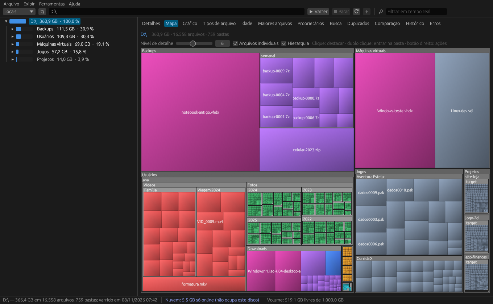
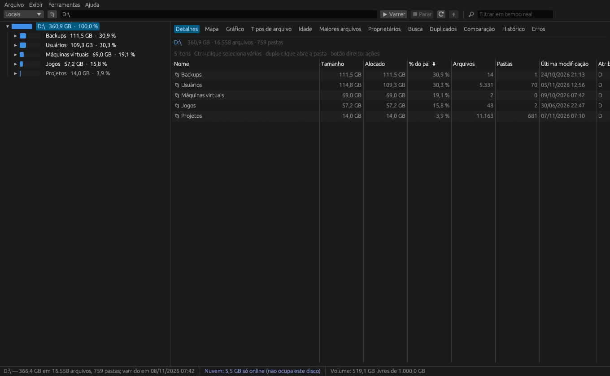
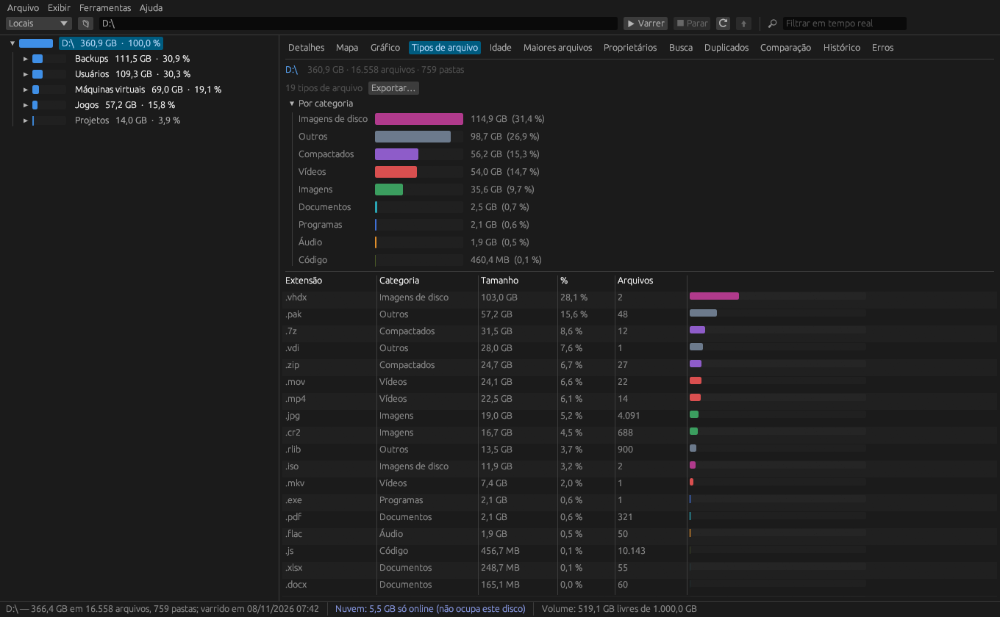

Veja o que está enchendo o seu discoSee what is filling your disk
Analisador de espaço em disco gratuito e de código aberto. Mapa de árvore, duplicados, buscas, relatórios e arquivos da nuvem separados do disco físico. A free and open source disk space analyzer. Treemap, duplicates, search, reports, and cloud files kept apart from your physical disk.
Windows · Linux · macOS · Licença MIT/Apache-2.0Windows · Linux · macOS · MIT/Apache-2.0 license

Tudo o que um analisador profissional fazEverything a professional analyzer does
Sem licença, sem cadastro, sem anúncios.No license keys, no sign-up, no ads.
Varredura rápidaFast scanning
Paralela em todos os núcleos, caminhos longos, compartilhamentos de rede, compressão NTFS e hardlinks contados uma vez.Uses every core; long paths, network shares, NTFS compression and hardlinks counted once.
Nuvem separadaCloud kept apart
Arquivos sob demanda do OneDrive aparecem à parte e não somam no disco. Nada é baixado sem querer.OneDrive on-demand files are shown separately and don't count as disk usage. Nothing gets downloaded by accident.
Mapa de árvoreTreemap
Os maiores blocos saltam aos olhos. Árvore com barras, pizza, tipos de arquivo e idade.The biggest blocks jump out. Tree with bars, pie charts, file types and age.
DuplicadosDuplicates
Por SHA-256 ou MD5, com marcação automática e troca por hardlinks para liberar espaço sem perder nada.SHA-256 or MD5, auto-marking, and hardlink replacement to free space without losing anything.
Busca avançadaAdvanced search
Nome, tamanho, datas, caminhos longos e texto dentro dos arquivos. Modelos salvos e ações em massa.Name, size, dates, long paths and text inside files. Saved templates and bulk actions.
Relatórios e históricoReports and history
Excel, PDF, HTML, CSV, SQLite. Instantâneos e comparação mostram onde o espaço cresceu.Excel, PDF, HTML, CSV, SQLite. Snapshots and comparisons show where space grew.
Linha de comandoCommand line
Varreduras agendadas, relatórios por e-mail e scripts com o atlasdisco-cli.Scheduled scans, e-mailed reports and scripting with atlasdisco-cli.
Leve e portátilLight and portable
Um único executável, sem instalador no Windows. Roda direto de um pendrive.A single executable, no installer on Windows. Runs straight from a USB stick.
Por dentroA look inside


Capturas de um disco de demonstração.Screenshots of a demo disk.
BaixarDownload
Versão mais recente, direto das Releases do GitHub.Latest version, straight from GitHub Releases.
macOS
macOS 11+ · Apple Silicon & Intel
.dmg (universal)(universal) Só linha de comandoCommand line onlyOs executáveis ainda não têm assinatura digital. No Windows, se o SmartScreen avisar, clique em “Mais informações → Executar assim mesmo”. No macOS, na primeira vez clique com o botão direito no app → Abrir. Binaries are not code-signed yet. On Windows, if SmartScreen warns you, click “More info → Run anyway”. On macOS, the first time right-click the app → Open. Todas as versõesAll releases
Para scripts e servidoresFor scripts and servers
atlasdisco-cli varrer D:\ --top 20 -e relatorio.xlsx --historico
atlasdisco-cli duplicados D:\Fotos --min 100KB -e duplicados.xlsx
atlasdisco-cli comparar ontem.atlas D:\ --profundidade 3
atlasdisco-cli agendar diario --hora 03:00 -- varrer D:\ -e C:\Rel\D_{data}.xlsx